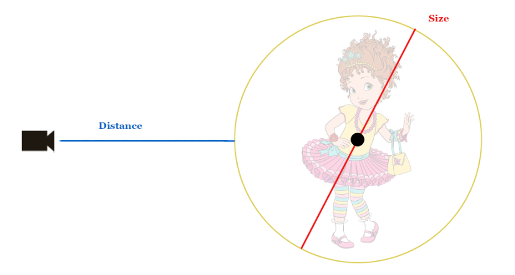

Selection Tool
This tool selects objects based on criteria like size, distance, and whether in frustum or not.
For example if you want to select objects that are close to the camera you click on "close +"
Similarly if you want to select small objects you click on "small +"
Whether an object is small/large or close/far is determined by a threshold slider.

Multiple sets of selection can be merged with some operations to get interesting results


You can use this tool to hide small objects that's neither in frustum nor near the camera in order to optimize the render layer which could improve the render times.
How are the size and distance measured?
If you're familiar with vectors then size is basically the diameter which is also the magnitude of the bounding box vector. Distance however is the vector from the camera to the center of the bounding box minus the radius
